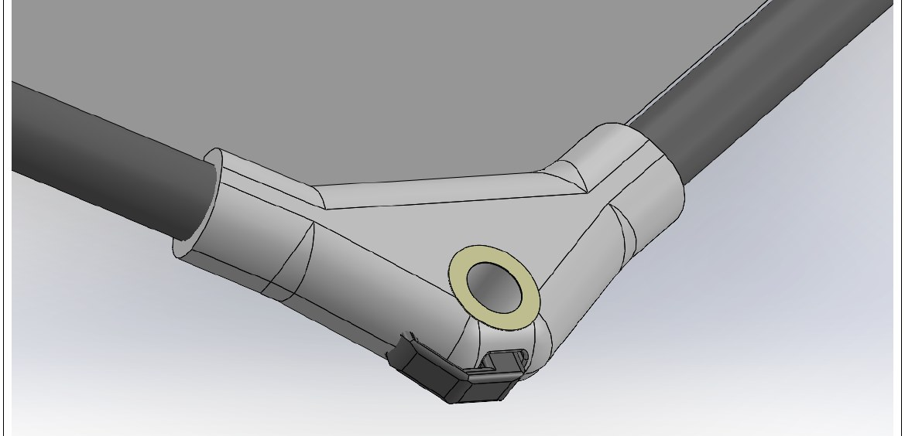
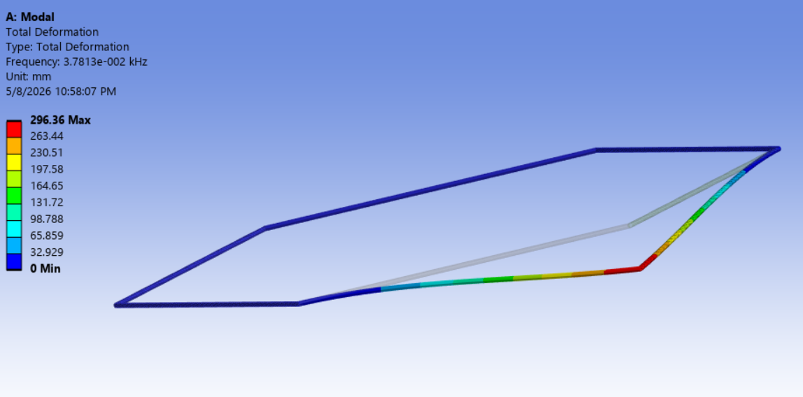
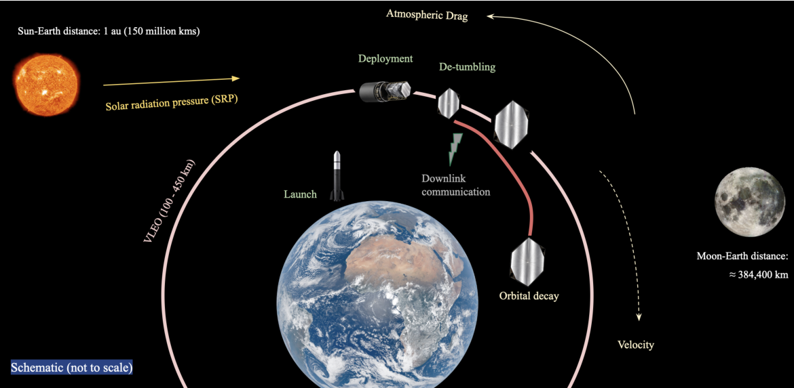
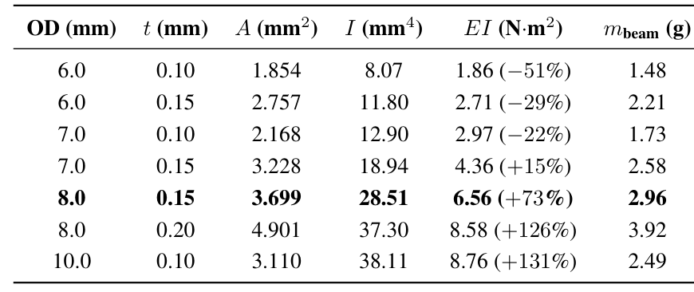
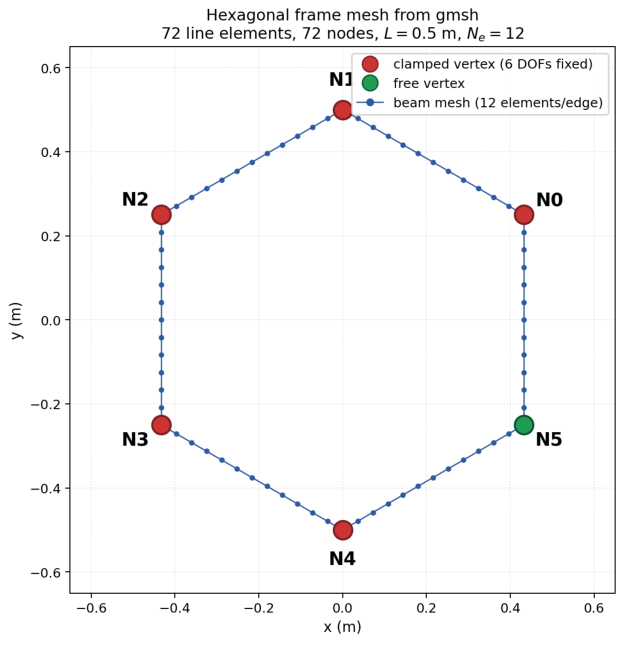

Duke Solar Sail
3D MODEL
I led the structural design, modal analysis, and verification test plan for a hexagonal carbon-fiber frame, 0.5 m per edge, that tensions a thin CP1 polyimide membrane, for Earth Cup RACE 1, an international student spacecraft competition. The design clears both MembraneSat Standard floors, flexural rigidity EI ≥ 3.8 N·m² and launch first-mode f₁ ≥ 20 Hz, inside a tight mass budget. We advanced to STEP 2, one of up to 50 teams. The frame is analyzed and specified, and now being built, at technology-readiness level (TRL) 3 to 4; STEP 2 is the build-and-test phase toward TRL 6 and a very-low-Earth-orbit launch targeting summer 2027.
Motivation
Every gram of frame lowers the sail's area-to-mass ratio and its solar-pressure thrust, so the job is to hit the stiffness floor at minimum mass.
My role
I chose the material and cross-section, built the beam-element modal model, cross-checked it by hand, and wrote the verification test plan. As Integration & Test Lead I am now writing the magnetorquer acceptance procedure and reviewing how the membrane attaches to the frame.
Technical approach
Material and cross-section. High-modulus M40J-class CFRP tubes joined at SLS-nylon nodes: specific stiffness about 5× aluminum, near-zero axial CTE to hold preload across the 10–50 °C launch band. I took the round tube over a stiffer square (I/A 1.00 vs 1.34 at equal area) for roll-wrapped manufacturability and buckling margin. A seven-geometry OD/wall sweep landed on 8.0 mm × 0.15 mm, 2.96 g per beam, clearing the EI floor by 73%.
Modal FEA. A 402-DOF Python beam-element model (EasyFEA): six edges as Euler–Bernoulli beams, five nodes clamped. First mode out-of-plane at 27.6 Hz against the 20 Hz floor, mode-2 gap over 11×; a Rayleigh two-cantilever hand check lands within 4.3%. A lumped-mass sweep at the free node set the 15 g node mass budget. Ansys with rigid clamps gives 37.8 Hz; the gap is the rigid-clamp assumption against the real joint.
Verification plan (planned, not yet run). Every gate ties to a prediction: k⊥ 345 N/m ±15%, f₁ ±10%, linearity R² > 0.99. A 0.8 g ICP accelerometer caps modal-test mass loading at 7%, so the plan corrects the f₁ gate from 27.6 to 26.7 Hz. An eight-cycle −40 to +85 °C thermal-vacuum plan targets the riskiest joint, carbon bonded to nylon. I screened 3M Scotch-Weld 2216 for outgassing: CVCM 0.04%, TML 0.77% against ASTM E595.
Integration & test, in progress. I am writing the magnetorquer acceptance procedure: a water-float jig simulates 0 g and confirms each unit aligns with the field. Membrane attachment methods are under review against the literature; my review ruled out a rigid film mount on thermal growth and recommended constant-force springs at the nodes.
What I would do differently. I ran the Ansys cross-check after the Python model, so the rigid-clamp gap surfaced late; I would reconcile the two models before any hardware.
From the white paper
- Total spacecraft mass 187.14 g, about 25% under the 250 g cap; the six beams weigh 17.76 g together.
- Mode 2 sits at 327 Hz, an 11.8× gap over mode 1 against a ≥10× requirement.
- Out of plane the free node is about 345 N/m stiff, against about 1.7×10⁶ N/m in plane. A two-cantilever Rayleigh hand check gives 26.45 Hz, within 4.3% of the FEA.
- Sweeping the lumped node mass from 5 to 30 g moves f₁ from 36.9 to 16.7 Hz; f₁ goes as 1/√m, so it reaches the 20 Hz floor near 20 g, and the 15 g node budget keeps it above 23 Hz.
- Verification gates: ±10% on frequency, ±15% on stiffness, R² > 0.99 linearity, and 5.80 mm predicted deflection at the 2 N test force.
TRY IT: NODE MASS VS. FIRST MODE
The first mode behaves like a mass on a spring, f₁ = (1/2π)√(k/m), with k = 344.5 N/m from the FEA and m = node mass + 1.40 g of beam. Drag the node mass and watch f₁ against the 20 Hz floor.
f₁ = Hz



FROM THE WHITE PAPER


